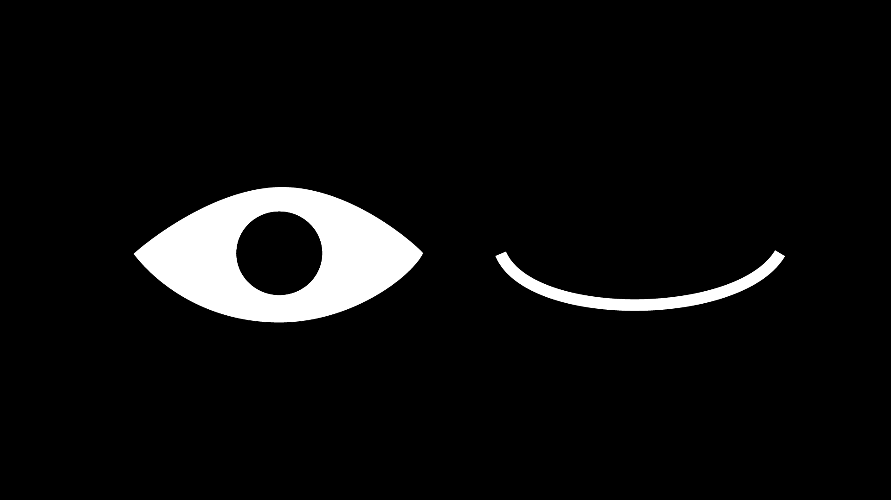

For this exercise, I recreated a simple eye icon using vector shapes in Adobe Illustrator. I used basic tools such as the Ellipse Tool and the Pen Tool to construct the eye shape, pupil, and curved line representing the closed eye.

Click to go back to main html page